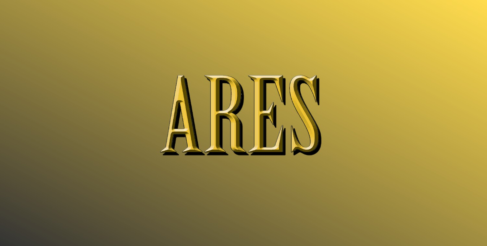
Arès (Terre-616)
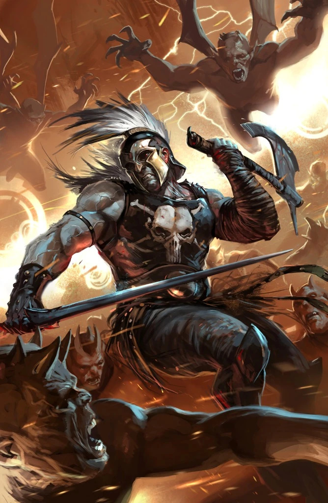
Origines :
Fils de Zeus et de Héra, Arès était vénéré comme le dieu de la Guerre en Grèce et en Rome Antique.
Il est le père d'Hippolyté, qu'il eut avec Otréré, ainsi que de deux garçons, Déimos et Phobos, qu'il eut avec Nox.
Avec la montée de la Chrétienté et l'arrivée des Célestes, Zeus ordonna le retrait des dieux Olympens des affaires humaines, ce qui ne plut pas du tout à son fils.
Le temps passant, il mena plusieurs révoltes contre le Dieu des Dieux, mais il sera stoppé à chaque fois par son demi-frère Hercule.
Lorsqu' Hadès tenta de s'emparer du Mont Olympe à la tête d'une armée de morts, Hercule et les autres dieux s'interposèrent mais furent rapidement dominés par ce flux infini de soldats morts, et Zeus fut contraint d'appeler Arès à la rescousse.
Après la guerre, il se rendit compte que sa famille s'était en réalité servi de lui pour sa grande puissance au combat, mais qu'ils n'appréciaient pas l'homme pour autant, et il décida de disparaître sur Terre où il prit une nouvelle identité : celle du charpentier Aaron.
Il aura même un fils, Alexander.
Un jour, son demi-frère Hermès, le messager des dieux, lui rendit visite, demandant qu'il apporte son aide à sa famille en conflit avec un dieu maléfique oriental, Amatsu-Mikaboshi.
Ce dernier profitait de la chute d'Asgard pour conquérir l'Ouest.
Arès, toujours amer, refusa.
Les dieux Olympiens furent contraints d'enlever son fils, qui fut confié à Achille.
Arès, fou de rage, reprit les armes pour sauver son fils, mais la citadelle d'Achille fut attaquée et Alexander enlevé.
Il fut lentement conditionné à devenir le nouveau dieu de la guerre pour Amatsu, plus juste et neutre que son père.
Dans l'affrontement final entre Arès et son fils, Alex le transperça avec un sabre mystique, mais l'amour de son père et le pouvoir de Zeus, aidé des messagers divins Hermès et Inari, aidèrent le jeune garçon à retrouver la mémoire, et Arès tua Amatsu.
Après la guerre, toujours déterminé à ce que son fils reçoive une éducation de mortel, Arès reprit son travail de charpentier à Dover, dans le New Jersey, où il travaillait lors de la mise en place de la loi de recensement des surhumains.
Immédiatement après la guerre civile des super-héros, Iron Man et Miss Marvel le recherchèrent pour le recruter dans leur nouvelle équipe d'Avengers.
Les héros ayant révélé leur identité civile, Arès finit par accepter de rejoindre l'équipe après qu'Iron Man l'eut menacé de le renvoyer vers l'Olympe s'il ne s'enregistrait pas auprès du gouvernement américain, et lui promit un salaire similaire à celui de son emploi dans le bâtiment.
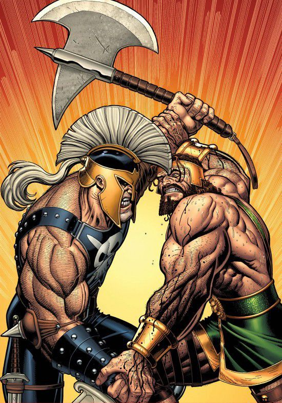
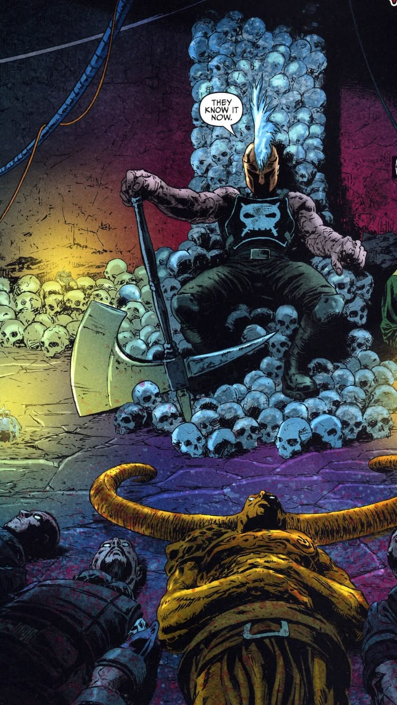
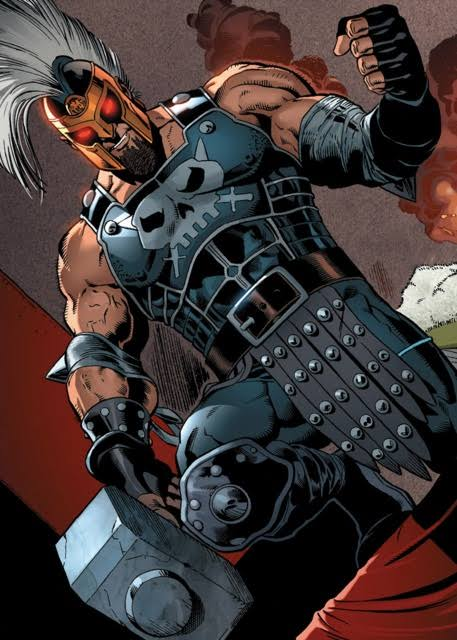
.jpg)
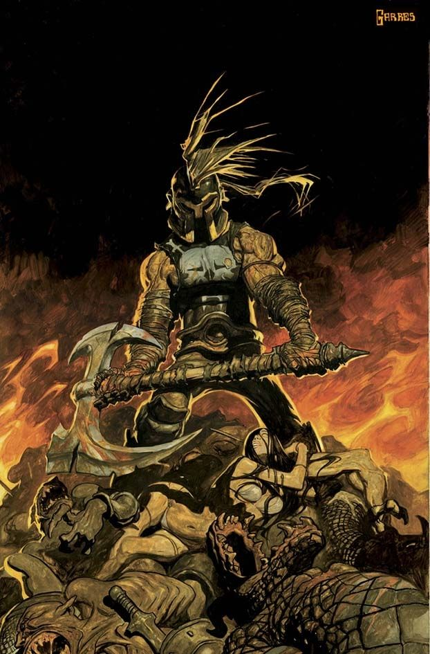
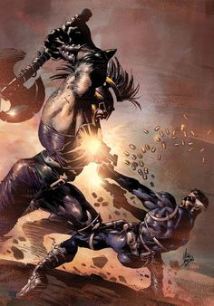
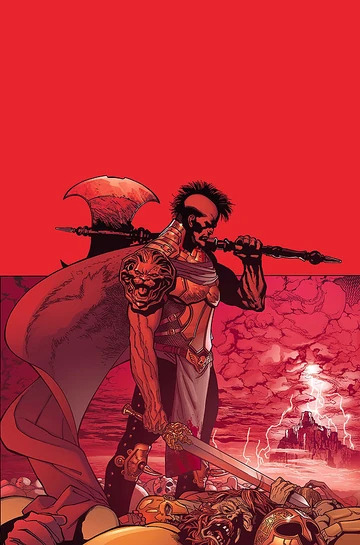
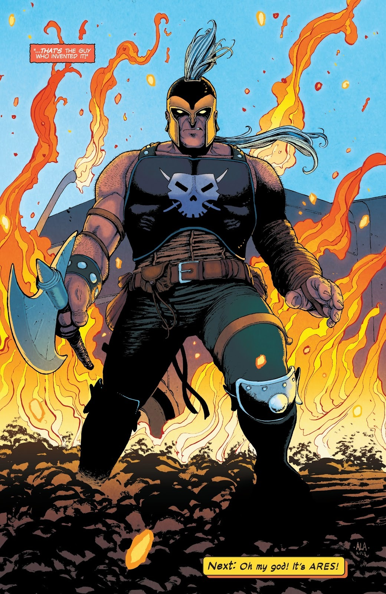
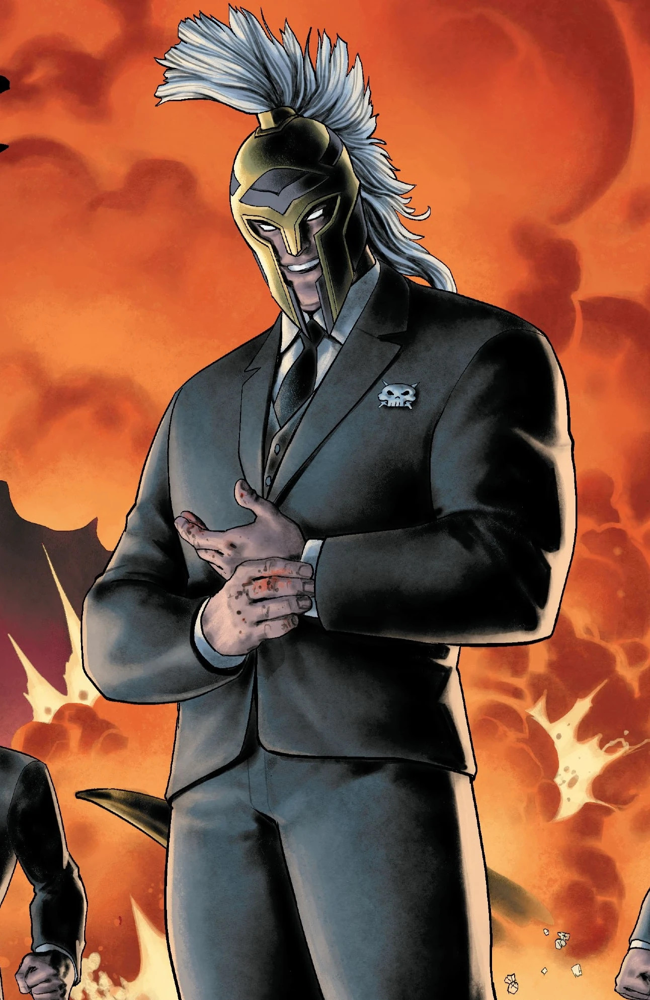
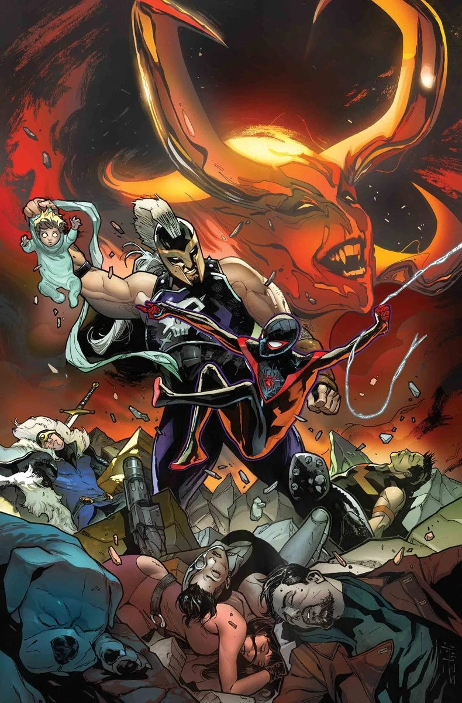
Capacités :
De par sa nature de dieu Olympien, Arès est un être immortel et insensible à la vieillesse.
Son corps est infatigable et résiste à toutes les maladies et poisons connus.
Les tissus de son corps sont tellement denses qu'il ne craint aucune blessure causée par des armes conventionnelles et, même blessé, il récupère à une vitesse surhumaine.
Il reste toutefois vulnérable à la magie et aux armes mystiques, comme le marteau de Thor.
Il possède une force divine, capable de soulever jusqu'à 75 tonnes, et est capable d'ouvrir des passages dimensionnels entre la Terre et le royaume de l'Olympe.
En tant que dieu de la guerre, Arès sait se servir de toutes les armes existantes (armes blanches, explosifs, équipement high-tech etc.), même s'il préfère les lames ou armes de mêlée.

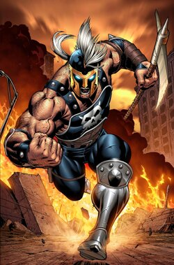
Apparence :
Arès est représenté comme un homme adulte extrêmement grand, massif, avec une musculature sur-développée.
Il possède souvent des cheveux noirs longs ou mi-longs coiffés de manière sauvage, avec une barbe courte et une expression menaçante.
Il porte fréquemment une armure métallique sombre protégeant ses épaules, ses bras et ses jambes, avec une esthétique grecque antique et un logo de crâne blanc sur le torse.
Il est souvent représenté portant un casque grec doté d'une crête recouvrant une partie de son visage.
En plus de sa tenue, Arès est presque indissociable de son arsenal.
Il est souvent représenté avec une épée, un bouclier, une hache de guerre ainsi que diverses armes blanches et parfois modernes, comme des armes à feu.
Équipes affiliées


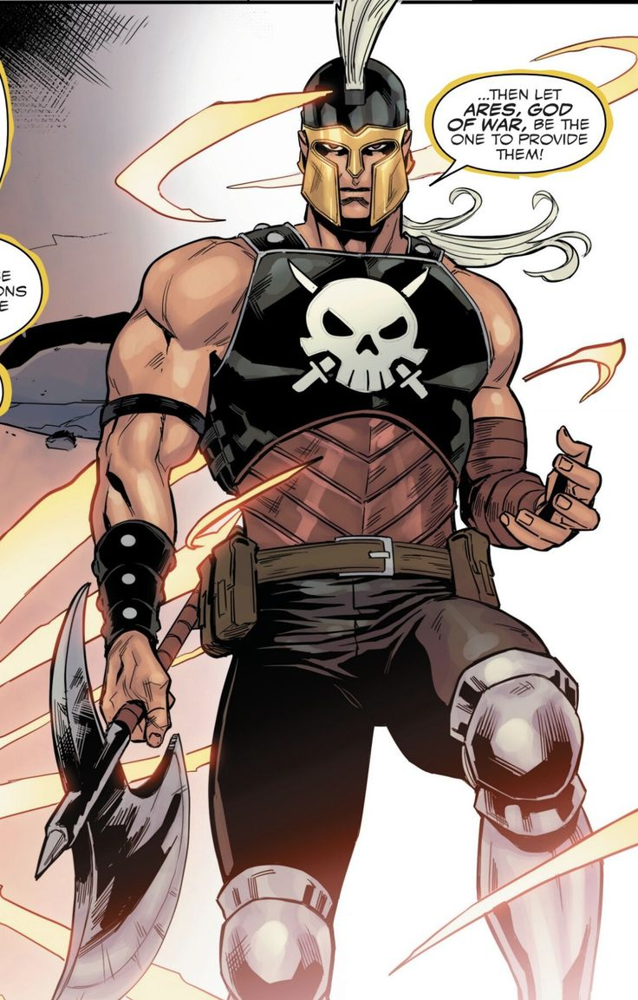
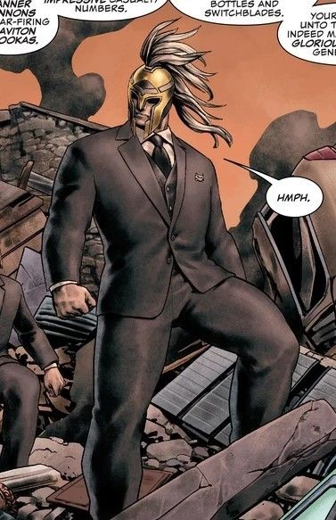
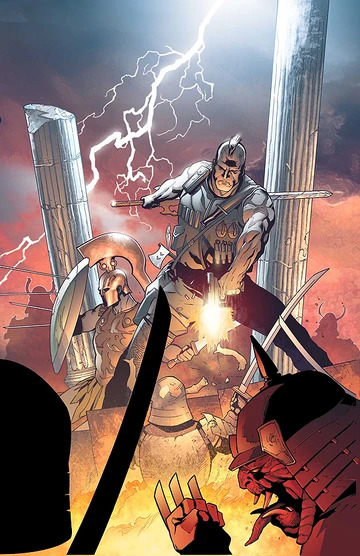
.jpg)
.jpg)
.jpg)